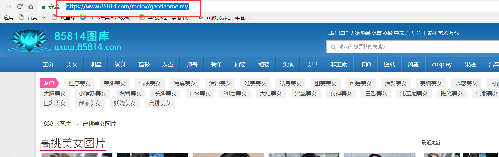
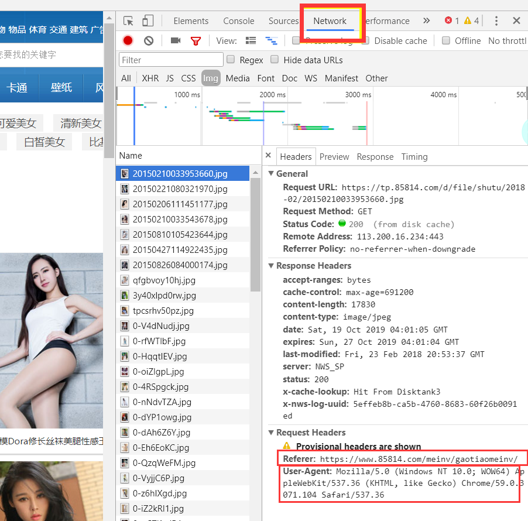
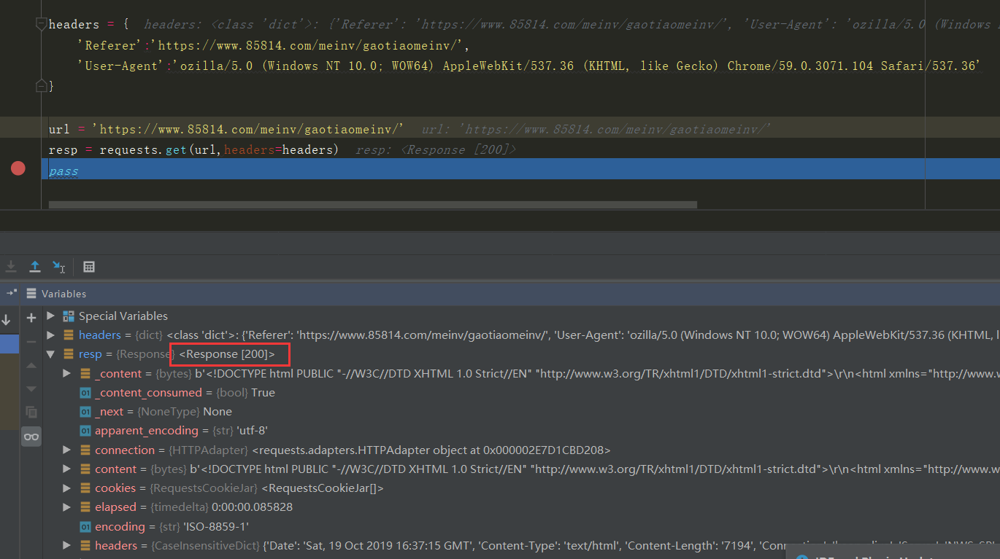
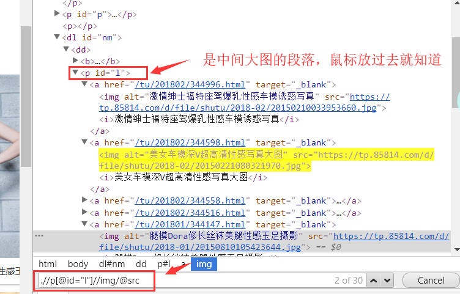
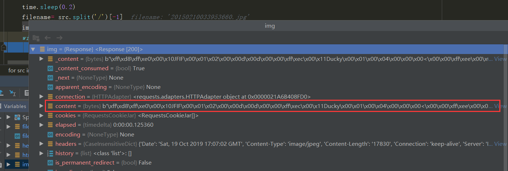
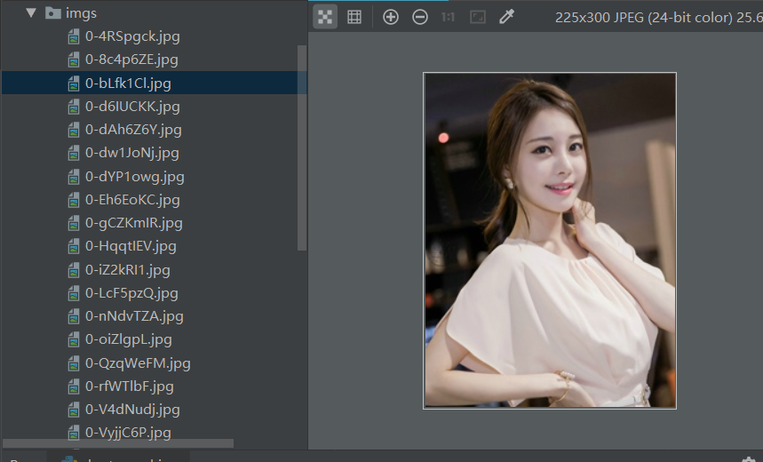

原文连接:https://www.cnblogs.com/hao11/p/11706502.html
前两天看到 某个程序猿写了个爬虫，然后公司200多人被端， 作为在入门python 的小白， 产生了兴趣，于是乎学习了下，写了一个小爬虫，做一些入门的抓爬，爬点美女图片吧 ！
let's do it

看一眼美女，写代码的兴致就上来了
爬虫是通过找到要爬的图片的url 然后进行下载， 这个url怎么找呢？
写过网页的应该都知道， 但是我没写过，我们打开网页后按F12弹出调试工具

选择network,在左侧选择一个有Request Headers 的
然后可以看到有 Referer, 字面意思是引用， 在此处是用来防止跨域请求，（我的理解是只能通过该网页，来获取左侧选择的文件 也就是这个页面上的元素），一会我们的请求头要用到
User-Agent: 用户代理，里面发现有Chrome这个单词，猜测是浏览器，于是换个火狐试了下 里面有Firefox， 这应该是浏览器代理 每个浏览器不同，我们用这个来伪装成浏览器访问
headers = {
'Referer':'https://www.85814.com/meinv/gaotiaomeinv/',
'User-Agent':'ozilla/5.0 (Windows NT 10.0; WOW64) AppleWebKit/537.36 (KHTML, like Gecko) Chrome/59.0.3071.104 Safari/537.36'
}
我们把它放到一个字典中，因为后面类型要求是字典
接着用Request库连接下网站
import requests
headers = {
'Referer':'https://www.85814.com/meinv/gaotiaomeinv/',
'User-Agent':'ozilla/5.0 (Windows NT 10.0; WOW64) AppleWebKit/537.36 (KHTML, like Gecko) Chrome/59.0.3071.104 Safari/537.36'
}
url = 'https://www.85814.com/meinv/gaotiaomeinv/'
resp = requests.get(url,headers=headers)
pass

可以看到 Response 为 200 表示连接上了
很好
下一步我们就要获取图片的url了， 点击开发工具左上角的元素审查，然后点击一张图

可以看到，img 的alt属性对于图的标题， src就是图片的源地址，可以复制出来，在进入这个网站试试。
多试几个图片的话，知道 中间的大图数据组织方式是一样的， 我们可以通过一个路径匹配来查找所有的src
Ctrl+F

下面是一个匹配模式，.//p[@id="l"] .//p会匹配当前页面下 所有p标签 这里用属性id ="i"限制， 找到主框， 然后双斜杠 在p[@id="l"] 下面匹配所有的img。 后面/@src 是获得所有的src 也就是url
上代码
from lxml import etree
html = etree.HTML(resp.text)
srcs = html.xpath('.//p[@id="l"]//img/@src')
得到的srcs是一个 list 只要遍历这个list 对每一个url 的图片进行download
for src in srcs:
time.sleep(0.2)
filename= src.split('/')[-1]
img = requests.get(src, headers=headers,timeout=10,verify=False)
with open( 'imgs/'+ filename,'wb') as file:
file.write(img.content)
用到了time,用来延迟，防止请求过快被服务器认作受到攻击，之前本人就被一个网站封ip了， 还有很多其他方法， 比如 每次用不同的 User-Agent伪装成不同的浏览器， 还有用代理ip, 之后会提到。
然后在当前目录创建imgs路径， img.context是图片的内容。

存的是bytes 所以用'wb' 打开。
运行程序 在img下就有很多美女图片了

一个简单的爬虫就完成了。
学习尚浅，有错误或不当之处还请指正。